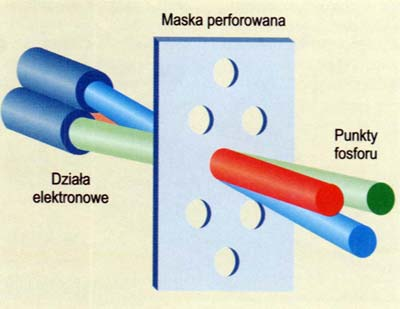

Urządzenia wyjścia
Drukarka|Ploter|Monitor
Drukarka
Urządzenie służące do drukowania na papierze tekstu lub grafiki zapisanej na dysku; najbardziej rozpowszechnione są drukarki igłowe, atramentowe i laserowe; drukarki igłowe są niezwykle korzystne, jeśli chodzi o cenę, lecz nie pozwalają uzyskać wydruku tak wysokiej jakości, jaką gwarantują drukarki atramentowe i laserowe; drukarki atramentowe z kolei są dość atrakcyjne cenowo, a poza tym oferują możliwość drukowania również w kolorze; jednak najlepsza jakość uzyskiwana jest przy użyciu drukarek laserowych.
Ploter
Urządzenie służące do kreślenia rysunków lub grafiki w formacie do A1 włącznie; ploter jest wyposażony w pisak (w przypadku ploterów kolorowych jest ich kilka), który porusza się po osiach x i y zgodnie z tym, jakie informacje otrzymuje od komputera; silnymi konkurentami dla ploterów są nowoczesne kolorowe drukarki atramentowe i laserowe.
Monitor
Urządzenie elektroniczne wyposażone w ekran, na którym - w zależności od rodzaju doprowadzonego sygnału elektrycznego - uzyskuje się ruchome obrazy, rysunki, wykresy, zestawienia, wyniki obliczeń i pomiarów, dane w postaci znaków i liter; ekran monitora stanowi najczęściej płaska część lampy kineskopowej (kineskop) lub płyta wyświetlacza ciekłokrystalicznego;
Typy monitorów
- CRT (Cathode Ray Tube) - z lampą kineskopową - monitory monochromatyczne i kolorowe,
|  |
| Zasada działania monitora, źródło PC World Computer. |
- LCD (Liquid Crystal Display) - ciekłokrystaliczne.
 |
| Zasada działania LCD, ródło PC World Computer. |
- OLED (Organic Light Emitting Diodes) - niski poziom poboru energii.
 |
| Zasada działania wyświetlacza OLED, źródło PC World Computer. |
Parametry Monitora:
- wielkość ekranu - podawana w calach przekątna ekranu,
- częstotliwość odświeżania - ilość obrazów wyświetlanych na ekranie w ciągu 1 sekundy, podawana w Hz,
- plamka - odległość na ekranie dwóch punktów o tej samej barwie, decyduje o dokładności odwzorowania obrazów,
- rozdzielczość - max. ilość punktów w poziomie i pionie możliwych do wyświetlenia bez straty jakości.